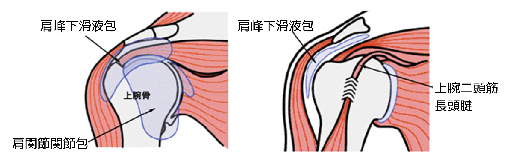
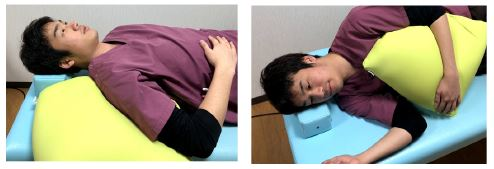

肩関節周囲炎(五十肩)
肩関節周囲炎とは
肩関節周囲炎とは、関節を構成する骨、軟骨、靱帯や腱などが老化して肩関節の周囲の組織に炎症が起こり、肩の痛みや動かしにくさが生じる疾患です。
肩関節の動きをよくする袋（肩峰下滑液包）や関節を包む袋（関節包）が癒着するとさらに動きが悪くなります。
中高年に多く、一般的に「五十肩」「四十肩」とも呼ばれます。

症状
肩を動かすと痛む、または動かしにくい
腕を上げる・後ろに回す動作が困難
肩の動きに制限がかかる
夜間や安静時の痛み（夜間痛）による睡眠障害 など
原因
年齢とともに関節内の組織（特に関節包）が硬くなることによる炎症で関節の使用頻度が減少することで、関節の動きが制限されるようになります。
日常生活での注意点
寒い時期は肩が冷えないよう注意しましょう。
また、寝ている姿勢で痛みが強くなるときは、仰向けで布団と肩の間に隙間ができないようクッション等を入れます。
横向きで寝る場合は、痛みがある方を上にして、クッションを脇で挟むようにし、腕が安定しておけるようにします。

治療
関節の柔軟性と強度を向上させるための可動域訓練や、痛み止め等により痛みを和らげる方法があります。
まずは1～2ヶ月、肩関節の動きを良くするために筋肉をほぐしたり筋力UPを行うリハビリを続けてみましょう。